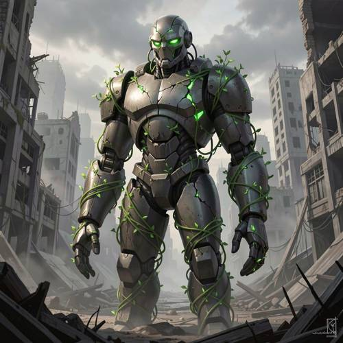
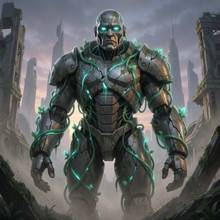
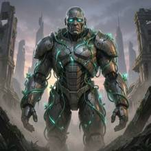

Attribute — In the ruins of an abandoned alien city, a huge robot statue looked sa
In the ruins of an abandoned alien city, a huge robot statue looked sad. Its metal body was wrapped around glowing plant vines, and vines grew out of cracks in the body.

Direct — one call, no iterationContinuum — Qwen3.8-27B + FLUX.2-klein-9B
Judge — Direct
FAILAttribute - Expression — The robot has a static facial plate and glowing green eyes. Its posture is upright, and it does not display any visual characteristics typically associated with sadness, such as a downturned head, slumped shoulders, or a sorrowful facial expression.
PASSGrammar - Consistency — Green vines with small leaves are wrapped around the robot's torso, arms, and legs. There are visible cracks on the robot's metallic surface, and from some of these cracks, particularly on the chest and head, there is a green glow from which small plant sprigs emerge.
PASSCompound - Imagination — The image displays a huge, metallic, humanoid robot statue standing in the middle of a destroyed city filled with rubble and crumbling buildings. Green vines are present on the robot, and a green light glows from cracks in its body, which could be interpreted as the vines glowing or being associated with a glow.
Judge — Continuum
PASSAttribute - Expression — The robot's face has downturned corners of its mouth and a furrowed brow, which combine to create an expression of sadness.
PASSGrammar - Consistency — Green plant vines with leaves are wrapped around the robot's torso, arms, and legs. There are visible cracks in the robot's metal chest and shoulder plates from which glowing vines appear to be growing.
PASSCompound - Imagination — The image displays a huge, metallic robot statue as the central figure. In the background are the ruins of large, futuristic buildings. The vines wrapped around the robot emit a bright cyan glow.
What the agent did
Thinking
Let's generate this image: in the ruins of a derelict alien city, a huge robot statue that looks dejected, a metal body wrapped in glowing plant vines, vines growing from cracks in the body. I'll use flux2-klein for generation, with no seeds, and omit steps/guidance. Let me write a detailed prompt. Size: default is 1024x1024, or maybe a vertical 832x1216 would be better for a huge statue? The instructions say the size is fixed for comparison, so the harness controls the size — "do not set a seed. Size and seed are controlled by the harness." Hmm, it says the size is controlled by the harness, but generate_image has width/height parameters. Since it says the size is fixed for comparison, I should probably leave the default (1024x1024). Let me leave the default. Prompt: "In the ruins of a derelict alien city, a huge robot statue, the face of a sad, melancholic expression, massive metallic body, weathered armor plating, wrapped in luminous glowing bioluminescent plant vines, glowing vines creeping over the metal body, vines and tendrils bursting out from cracks in the statue's body, emitting soft teal-green light, alien architecture crumbling in the background, broken futuristic towers, moss, mist, moody twilight atmosphere, cinematic, highly detailed." Let's generate.
Step 1 — `generate_image`
{
"model": "flux2-klein",
"prompt": "In the ruins of an abandoned alien city, a huge robot statue with a sad melancholic face, massive weathered metal body, ancient armor plating, glowing bioluminescent plant vines wrapped around its body, luminous teal-green vines and tendrils growing out of cracks in the metal body, soft glow from the plants, crumbling alien architecture in the background, broken futuristic towers, moss and dust, misty twilight atmosphere, cinematic lighting, highly detailed fantasy scene"
}
Result img_0

Thinking
The image is very good: a giant robot statue in a ruined alien city, glowing teal-colored vines wrapped around its metal body, vines bursting out from the cracks. The face looks somewhat stern/neutral — the prompt calls for "sad." Let me zoom in on the face and check the expression. Let me inspect the face region and check how sad it looks.
The face looks stern, but you can also read it as sad—there's a slight downturn at the corners of the mouth, and the brows are slightly furrowed. The glowing eyes give it a solemn impression. It's acceptable as a "sad" expression, but you could say it's more stern/grim than sad. The whole scene matches the prompt well: ruins of an abandoned alien city, a giant robot statue, a metal body wrapped in glowing vines, vines growing from cracks in the body (you can see cracks with teal-colored light coming out on the chest). The prompt requires "looked sad"—the current face is more stern/gloomy. I could edit it to be sadder (drooping brows, mouth corners clearly turned down). That would improve the match. Let me try editing the face to make the expression clearly sad. Let me make a targeted edit: "Make the statue's facial expression more sad and melancholy—brows drooping, mouth corners clearly turned down, eyes downcast and sorrowful, keeping the glowing teal eyes and metallic texture as they are."
Model
The scene matches well — the ruined alien city, the huge metal statue, the glowing vines wrapped around the body, and the vines growing out of the cracks in the chest. The face reads as stern more than sad, so I'll deepen the melancholy expression.
Step 3 — `edit_image`
{
"image": "img_0",
"model": "flux2-klein",
"prompt": "Change the statue's facial expression to be clearly sad and sorrowful: brows lowered and drooping at the inner ends, mouth corners visibly turned down, a weary mournful frown, while keeping the glowing teal eyes, metal surface, and everything else in the image exactly as they are."
}
Result img_2

Thinking
Let's check the face of img_2 and see whether the expression has become more melancholic, and whether the rest of the image has been preserved.
The face now clearly looks sadder: the brow is furrowed, the mouth is downturned, and there's a melancholic expression. The eyes still glow teal. The rest of the image seems to be preserved — the vines are still wrapped around, the cracks are still glowing, the ruins are still there. All elements of the prompt are present: - The ruins of a derelict alien city ✓ (background towers, debris) - A giant robot statue ✓ (huge, dominating the frame) - Looking sad ✓ (now clearly a melancholic expression) - The metal body is wrapped in glowing plant vines ✓ - Vines are growing out of cracks in the body ✓ (glowing teal-colored cracks on the chest, vines coming out of them) This is a good result. I'll mark img_2 as the best and stop.
Model
The face now clearly looks sad — furrowed brows, downturned mouth, mournful expression — while the glowing teal eyes, the vines wrapped around the body, the vines bursting out of the chest cracks, and the ruined alien city are all preserved. All the elements of the prompt are present.
Step 5 — `mark_best`
{
"image": "img_2",
"reason": "Huge robot statue in a ruined alien city with a clearly sad expression, glowing vines wrapped around its metal body and growing from cracks in the chest. All prompt elements present and correct."
}
Thinking
Done. The marked image is img_2, which is the final and best version. Stopping here.
Model
Done. The final image shows a huge robot statue in the ruins of an abandoned alien city, with a visibly sad, mournful face. Its weathered metal body is wrapped in glowing teal bioluminescent vines, and luminous vines sprout from cracks running through its chest and armor — all set against crumbling alien towers in a misty twilight. This version (img_2) is marked as the best result.